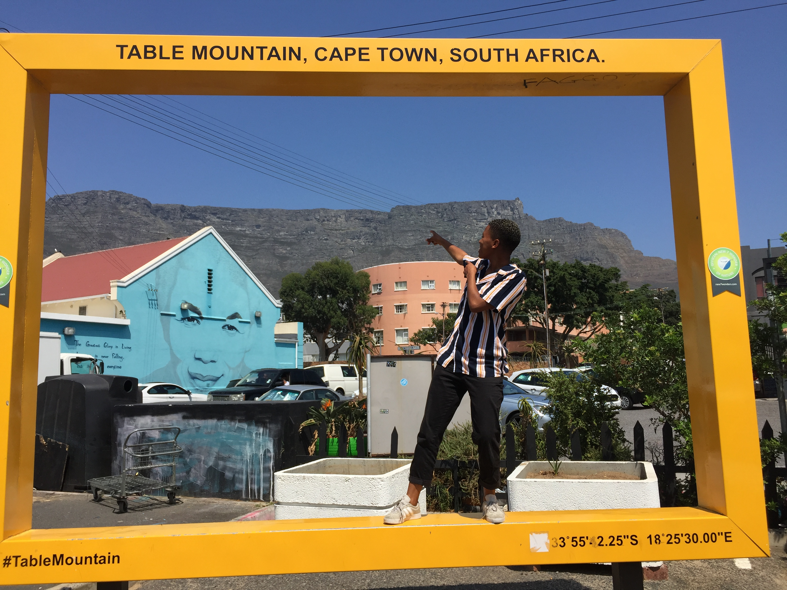
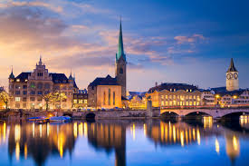
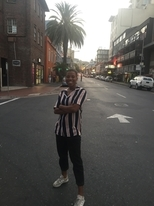

Chuma
Gushman

Which city?

Zürich
Zurich is an upmarket banking city and the financial capital of Switzerland. It, therefore, comes as no surprise that it’s often labelled as the most expensive city in the world. Zurich is famous for luxurious lifestyles, high-end shopping, and fancy chocolates. However, despite its expense and extravagance, it is also ranked as one of the best cities to live in the world.
A foreign language
| English | French |
|---|---|
| hi my name is Chuma | salut mon nom est Chuma | happy birthday | bon anniversaire |
| thank you | merci |
Historical places in Cape Town
Castle of Good Hope

- it took 13 years to build the building, contsruction of the castle started in 1666.
- its supposedly haunted
- the building has overcome wars, terrible weather, it is amongst the well kept structure.
City hall
- Nelson Mandela gave a speech from the balcony of City Hall immediately upon his release from prison.
- The Hall itself is made up of components from all over the world
- The bell tower contains Africa's largest carillon of 39 bells and is modeled on London's Big Ben (although it is around 50% scale).
Longstreet
- the best night life in Cape Town is in longstreet
- has some of the oldest buildings
- It is famous as a bohemian hang out and the street is lined with many book stores, various ethnic restaurants and bars.